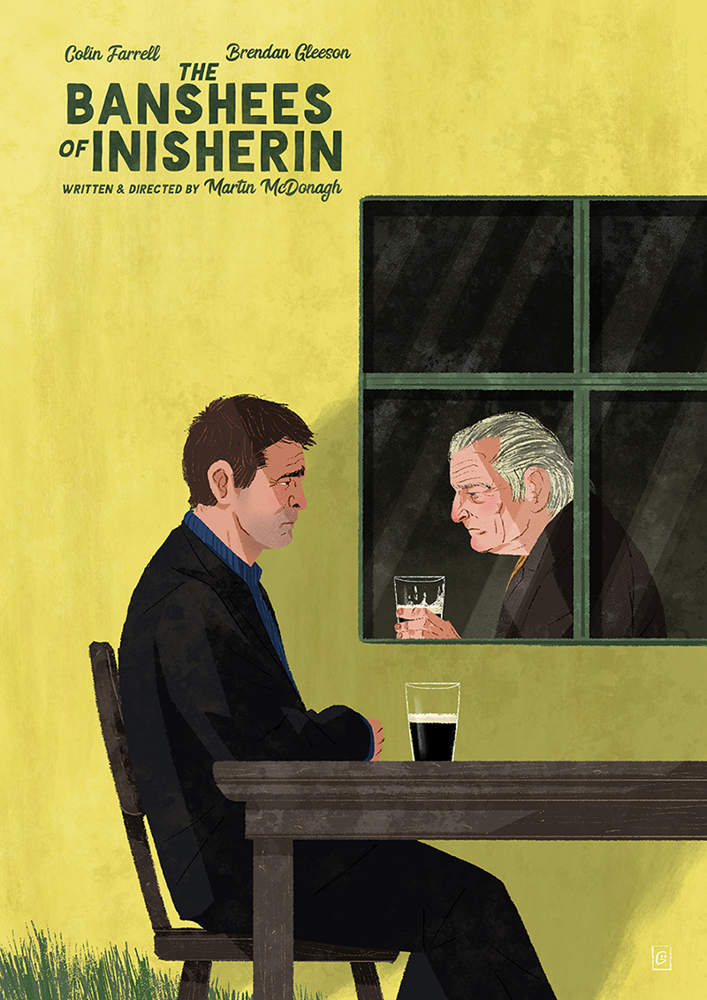

The Banshees of Inisherin
Published: October 2022
Directed by Martin McDonagh, "The Banshees of Inisherin" is a masterclass in dialogue-driven cinema. The film tells the story of two old friends on a small Irish island whose friendship comes to an abrupt end, leading to a series of darkly comic and tragic consequences.

With stellar performances from Colin Farrell and Brendan Gleeson, the film explores themes of friendship, isolation, and the human condition. McDonagh's sharp wit and impeccable direction make this one of the most engaging films in recent cinema. The setting of Inisherin becomes a character itself, emphasizing the isolation of the protagonists and amplifying the emotional weight of their conflict.
The supporting cast, including Barry Keoghan and Kerry Condon, provides excellent comedic relief while maintaining the film's darker undertones. The cinematography beautifully captures the bleak Irish landscape, enhancing the mood of the narrative.